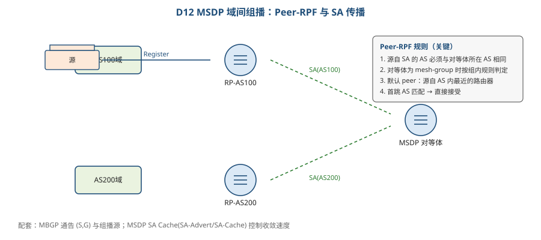

第 7 章 域间组播：MSDP 与 MBGP
精读来源：Aweya Ch6（p.361–386：MSDP 概述 p.362–367、§6.5 peer-RPF p.372–374）、p.16 / p.40–42（MBGP 与 RPF 的关系） 本章解决的问题：单域内 RP 是"配置出来的"，跨域时对方的 RP 是谁、对方域里有哪些源都必须靠协议交换。MSDP 交换"源在哪"，MBGP 交换"组播路径走哪"——一个解决源发现问题，一个解决 RPF 问题，经常被混为一谈。
学习目标
- 分清 MSDP 与 MBGP 各自解决什么，为什么两个都需要；
- 说清 SA 报文的三个关键字段（源、组、originator RP）与封装数据的规则；
- 解释 peer-RPF flooding：收到 SA 后凭什么判断该不该信；
- 说清 mesh-group 与 default peer 的适用场景与风险；
- 把"域间能收到 SA 但拉不到流量"拆成 RPF、Join 路径、策略三段来查；
- 知道 Anycast-RP 里 MSDP 的角色，以及 RFC 4610 出现后它的可替代性。
1. 跨域缺的是什么
| 缺的信息 | 谁提供 | 报文 |
|---|---|---|
| 我这个组有没有源、源在哪个域 | MSDP | Source-Active（SA） |
| 去往源/组的路径是否"组播可用" | MBGP | 带组播属性的 NLRI |
| 谁是我域的 RP | BSR / Auto-RP / 静态 | 域内机制，不出域 |
关键认识：RP 发现机制不出域。BSR/Auto-RP 靠 224.0.1.40 泛洪，天然被域边界截断。所以跨域必须显式配 MSDP 对等体——这也是"域间组播一定要人工规划"的根本原因。
Aweya p.16 的措辞很直接：MSDP 通常与 MBGP 一起用（MBGP/MSDP 成对出现），因为源发现和 RPF 必须同时成立。
2. MSDP：把"源"告诉邻居域
2.1 会话建立
Aweya p.363 给了两个容易考到的细节：
- TCP 639，不是 UDP；
- IP 地址高的一方监听（listen），低的一方主动发起连接。
RP-A (10.1.1.1) ←──── TCP 639 ────→ RP-B (10.2.2.2)
低 IP 主动 connect 高 IP 被动 listen
所以"MSDP 邻居起不来"的第一件事是查 639 是否双向放通，第二件事是查谁在 listen（NAT/负载均衡后面很容易两边都不 listen）。
2.2 SA 报文
SA 携带：(S, G) 列表 + originator RP 地址（谁最先知道这个源），可选封装第一个数据包。
Aweya p.364 的两条格式约束很实用：
- 一个 SA 里多个
(S,G)条目时，只有最后一条可以带封装数据； - 带封装数据时，
Entry Count通常为 1。
为什么要封装首包？为了让接收域 RP 能立刻拿到数据、不必等源重新发包——对"发一次就停"的推送类业务很关键。
2.3 peer-RPF：凭什么信这条 SA
Aweya p.366、p.372–374：RP 收到 SA 后要判断"这条 SA 是否来自通往 originator RP 的正确方向"，这就是 peer-RPF flooding。
判断顺序（与单播 RPF 同构，但对象是"peer"）：
- SA 的 originator 是我自己 → 直接接受（本地源）；
- originator 与我在同一个 mesh-group → 接受；
- 到 originator 的 BGP/MBGP 下一跳 就是发 SA 的这个 peer → 接受；
- 到 originator 的路由是默认路由，且该 peer 是 default peer → 接受；
- 否则丢弃。
这条机制解释了"多出口域间"的经典故障：去往对方 RP 的最优路由走了 A 出口，SA 却从 B 出口进来——peer-RPF 失败，SA 被丢弃，表现为"邻居 up、
show ip msdp sa-cache却空"。
2.4 mesh-group 与 default peer
- mesh-group：全互联的一组 RP。成员之间不互相转发 SA（Aweya p.367、p.374），从一个成员收到的 SA 不再发给其他成员，避免 n² 重复；
- default peer：把"没有更具体路由的 SA"都交给某个 peer 处理，用于单出口的简单拓扑。
风险：mesh-group 配错（漏了某台）→ SA 在成员间来回；default peer 配错 → SA 从错误出口进来，被 peer-RPF 丢掉。

3. MBGP：让 RPF 走"组播路径"
3.1 与单播 BGP 的关系
MBGP（RFC 4760 的多协议扩展）在同一条 BGP 会话里同时承载 IPv4 单播与 IPv4 组播 NLRI。它可以：
- 宣告和单播不同的组播拓扑（同一前缀，两条不同 next-hop）；
- 让 RPF 检查优先使用组播路由。
Aweya p.40–42 明确了 RPF 的查表顺序：静态 mroute → MBGP → 单播 RIB → 默认路由，并强调"搜索 MBGP 或单播表时按最长前缀匹配；前缀长度与 metric 相同时再比较"。
与第 3 章的四级回退链对照看：MBGP 排第二。这解释了一个高频现象——路由表里明明有更具体的单播路由，RPF 却选了 MBGP 的路由，因为优先级在"表"这一层就已经决定，不是最长前缀优先。
3.2 典型跨域拓扑
AS 100 (源域) AS 200 (接收域)
S ── DR ── RP-A ═══ MBGP ═══ RP-B ── 最后一跳 DR ── 接收者
║ MSDP (SA: S,G) ║
流程：
- 源域 RP-A 收到 Register，建
(S,G)，向 MSDP peer RP-B 发 SA； - RP-B 通过 peer-RPF 接受，写入 SA cache；
- 接收域主机加入 → 最后一跳 Join
(*,G)到 RP-B； - RP-B 发现 SA cache 里有
(S,G)，且自己是该组的 RP → 向源发(S,G)Join（跨域，沿 MBGP 路径）； - 数据沿 SPT 到达 RP-B，再沿 RPT 下到接收者。
注意第 4 步：跨域时"RP 主动去拉源"是 MSDP 生态的核心动作，与"最后一跳切 SPT"是两件事。
4. 八个工程案例
典型化场景，用于训练推理路径，非具体故障取证。
案例 1：MSDP 邻居长期 IDLE/反复 up-down
- 现象：
show ip msdp peer一直Down或Connect，TCP 无 ESTABLISHED。 - 定位：
show ip msdp peer、telnet <peer> 639、边界 ACL 计数。 - 根因：TCP 639 被 ACL 拦截；或两侧都配了
connect-source指向不可达地址。 - 处置：放通 639 双向；固定 loopback 作为 connect-source。
- 复盘：MSDP 是 TCP 应用，任何"只放 UDP 组播"的 ACL 都会顺手打断它。
案例 2：邻居 up、SA 收到但 sa-cache 为空
- 现象：
show ip msdp peer显示 Established 且有收发计数；show ip msdp sa-cache为空。 - 定位：
debug ip msdp、show ip bgp <originator-IP>、show ip rpf <originator-IP>。 - 根因：peer-RPF 失败——去往 originator RP 的路由下一跳不是这个 peer（多出口非对称）。
- 处置：调整 MBGP 出口策略，或在接收侧配置正确的 default peer；必要时用 SA filter 显式放行。
- 复盘："SA 有计数但没进缓存"= peer-RPF 丢的，与链路质量无关。
案例 3：mesh-group 漏配，SA 在 RP 之间打转
- 现象：多台 RP 全互联，CPU 偏高，
debug ip msdp看到同一 SA 反复进出。 - 定位：逐台
show ip msdp peer（是否 mesh-group 成员一致）、show ip msdp summary。 - 根因：mesh-group 成员清单不一致，某台把 SA 又发回成员。
- 处置：统一 mesh-group 配置；或用
ip msdp mesh-group <name> <member>全量补齐。 - 复盘：mesh-group 的价值是"抑制成员间转发"，漏一台就等于没配。
案例 4：Anycast-RP 内 MSDP 全互联后 SA 风暴
- 现象：4 台 Anycast RP 全互联，
sa-cache条目数远超实际源数，CPU 高。 - 定位：
show ip msdp sa-cache summary、show ip msdp peer。 - 根因：两两互联形成完全图，SA 反复转发（缺 mesh-group 或 RFC 4610 机制）。
- 处置：改为 mesh-group 或直接用 PIM Anycast-RP（RFC 4610），不再用 MSDP 同步。
- 复盘：Anycast 内部的 MSDP 是"实现手段"，不是协议要求（见第 5 章 p.331–332）。
案例 5：跨域 (S,G) 建不起来，RPF 指向错误出口
- 现象：RP-B 上有 SA、有
(*,G)，就是没有(S,G)；show ip rpf <S>指向默认路由出口。 - 定位：
show ip rpf <S>、show ip bgp <S>、show ip mbgp（或在 BGP 中查看组播 NLRI）。 - 根因：源前缀未通过 MBGP 宣告，RPF 回退到默认路由，Join 发往错误方向。
- 处置：在源域出口宣告该前缀的组播 NLRI；核对 RPF 优先级。
- 复盘："有 SA 无
(S,G)" 几乎等价于 RPF 失败，先看show ip rpf。
案例 6：新接收者加入后要等 1 分钟才有流
- 现象：跨域组播，第一个接收者加入后约 60 s 才出流；后续正常。
- 定位：RP-B 的
show ip msdp sa-cache <G>时间戳、SA 的周期性刷新。 - 根因：SA 缓存刚过期，需等下一次 SA 刷新；或源域只在注册时发一次 SA。
- 处置：源域定期刷新 SA（周期性），接收域适当延长 SA cache 超时。
- 复盘：SA 是有寿命的"通告"，不是永久状态；超时设置要与业务启动时延匹配。
案例 7：双出口域间，SA 从错误 peer 到达被丢弃
- 现象：同一 SA 从 A 出口能进、从 B 出口进不来；现象随 IGP/BGP 收敛漂移。
- 定位：
show ip msdp peer两个 peer 的计数、show ip bgp到 originator 的 best path。 - 根因：去往 originator 的最优路径与 SA 实际来向不一致。
- 处置：用 mesh-group 把两出口纳入同一组，或统一出口选路。
- 复盘：peer-RPF 与单播选路强耦合——单播一动，组播的 SA 接受关系就变。
案例 8：SSM 段出现 SA，跨域出现不该有的状态
- 现象：
show ip msdp sa-cache里有 232/8 条目；接收域 RP 上出现该组注册。 - 定位：
show ip msdp sa-cache | include 232.、源域 RP 配置。 - 根因：源域未把 232/8 划为 SSM，走了 ASM + 注册 → SA 跨域传播。
- 处置：源域定义 SSM 范围；接收域对 232/8 做 SA 过滤。
- 复盘：SSM 的正确性依赖全域地址规划，跨域时只要一端漏了，另一端就会被污染。
5. 十问自测
- MSDP 与 MBGP 分别解决什么问题？
- SA 报文里的 originator RP 是什么含义？
- peer-RPF 的接受条件有哪几条？
- mesh-group 抑制的是什么转发？
- 为什么 RP 发现机制"不出域"？
- MSDP 用 TCP 还是 UDP？端口？谁 listen？
- RPF 查表顺序里 MBGP 排第几？
- "有 SA、无
(S,G)"最先查什么？ - Anycast-RP 内不用 MSDP 的替代方案是什么？
- 跨域组播里"RP 主动拉源"与"最后一跳切 SPT"分别由谁触发？
6. 原文精读索引
纸面页码：Aweya = PDF 页 − 21（
tools/srcgrep.py+ 页首页码实测）。
| 知识点 | 书/节 | 纸面页 | 原文可核对要点 |
|---|---|---|---|
| MSDP 与 MBGP 成对使用 | Aweya §1.1 | p.16 | “MSDP is typically used with MBGP” |
| MSDP 用途（域间 / Anycast） | Aweya Ch6 引言 | p.362 | 域间交换 SA；Anycast-RP 内同步 |
| TCP 639 与 listen 规则 | Aweya §6.x | p.363 | 高 IP 侧 listen，低 IP 侧主动 connect |
| SA 封装数据规则 | Aweya §6.x | p.364 | 多条目时只有最后一条可带数据；Entry Count 通常为 1 |
| peer-RPF flooding | Aweya §6.5 | p.366、372–374 | 按 originator 的 peer-RPF 方向接受 SA |
| mesh-group 不互转 | Aweya §6.x | p.367、374 | 同组成员之间不再转发 SA |
| MBGP 与 RPF 优先级 | Aweya §1.x | p.40–42 | 静态 → MBGP → 单播 → 默认；同前缀比 metric |
| Anycast-RP 不需要 MSDP | Aweya §5.16.5 | p.331–332 | RFC 4610 的 PIM Anycast-RP 机制 |
| MSDP 的完整机制与配置 | W Ch17 | p.509–517 | SA/RPF 规则、mesh-group、默认 peer |
| 域间方案的演进（BGMP → MSDP+MBGP） | W Ch17 | p.508–525 | 为什么最终落到 MSDP 而不是 BGMP |
| MSDP peer 与 SA 缓存排障 | iP Ch10 | PDF p.363–370 | show ip msdp sa-cache、peer 状态机 |
| MBGP 与 RPF 表的核对 | iP Ch12 | PDF p.419–431 | show ip rpf 与 show ip bgp 的对照 |
| MSDP 的消息类型与 TLV 格式 | v2 Ch1 | p.45 | SA / SA-Request / SA-Response / Keepalive 四类；VALUE 含 Sprefix Len、组、源 |
| MSDP 部署与本地化过滤 | v2 Ch1 | p.50–60 | ip msdp peer ... connect-source；例 1-18 用 MSDP filter 把本地组挡在域内 |
| MBGP 的配置与验证 | v2 Ch1 | p.25–32 | 例 1-5 show ip bgp neighbors 的 AFI/SAFI 输出 |
| 域间组播的两种设计模型 | v2 Ch1 | p.62–82 | Intra-AS multidomain 与 Inter-AS/Internet |
| 跨域转发树的实测 | v2 Ch1 | p.80 | 企业源到 ISP-1 的完整树，mroute flags 含 M - MSDP created entry |
| 不用主动源学习的域间方案 | v2 Ch1 | p.88–98 | 以 SSM/静态方式替代 MSDP 的设计取舍 |
| MSDP 对等体的建立与状态 | Aweya Ch6 | p.362–368 | TCP 639 端口、peer 状态机与保活 |
| SA 缓存的维护与超时 | Aweya | p.385 | 缓存条目的老化与 group/source 索引 |
7. 延伸
- 标准：RFC 3618（MSDP）、RFC 4760（MP-BGP）、RFC 4610（Anycast-RP）
- 下一章：MVPN 与 MLDP——把组播搬进 MPLS/运营商骨干
- 回顾：第 3 章 RPF 四级回退链、第 5 章 RP 发现、第 6 章 SSM（跨域也要守 SSM 规则）